起飞前
趁大家还在一起时（在家或在登机口）把一切设置好：
- 在群组中每个人的 iPhone 或 iPad 上安装 FlightChat。
- 由一人创建群组：在第一个界面选择新建群组，并为它命名。
- 其他人加入：扫描群组的二维码，或选择加入群组，在附近申请加入。参见下面的“加入群组”。
- 发送一条测试消息，确认每个人都能收到。
第一次打开 FlightChat 时，请允许它查找本地网络上的设备。否则它无法找到你的群组。如果想先不加入群组，比如先写笔记或玩纸牌接龙，可以在第一个屏幕上轻点 ✕；之后可以通过 + 创建或加入群组。
设置好 FlightChat 后，会有一个简短的教程介绍基本用法。想再看一遍，请打开设置并轻点查看教程。
FlightChat 支持 iPhone 和 iPad，二者可以一起聊天和玩游戏。在 iPad 上，聊天列表会一直显示在打开的聊天旁边，你可以随意旋转 iPad，也可以将 FlightChat 与其他 App 并排使用。
在飞机上
- 像平常一样打开飞行模式。
- 打开控制中心，重新打开无线局域网和蓝牙。无需加入任何网络。
- 打开 FlightChat。聊天列表顶部会显示谁已连接。
只有在 FlightChat 打开时手机才会连接。回到 App 后，手机会自动重新连接并补收错过的内容。
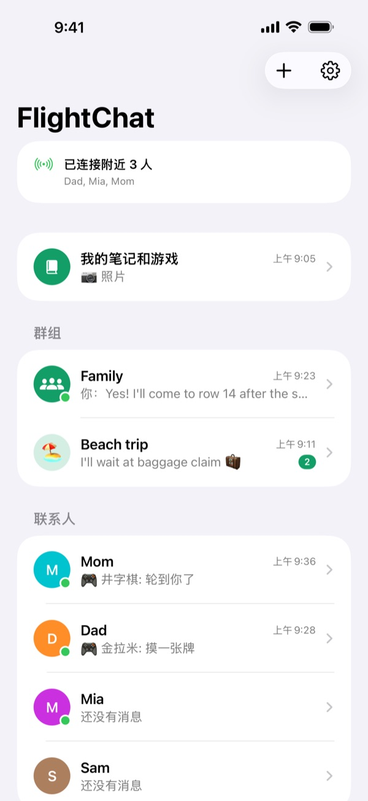
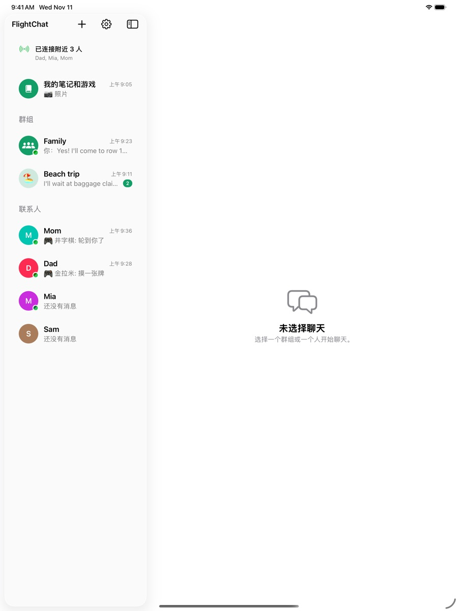
群组
群组是被允许加入的人共享的聊天。你最多可以同时加入 10 个群组，例如一个家人群组和一个同航班朋友的群组，并与所有群组保持连接。
创建群组
- 在聊天列表中，轻点 +，然后轻点创建。
- 为群组命名。FlightChat 会为它生成一个难以猜到的代码，其他乘客无法猜出代码加入。
- 轻点创建。然后邀请其他人：轻点邀请他人，给他们发送包含 App Store 链接和群组链接的消息，让他们趁还有网络时安装 FlightChat；或者把群组的二维码给他们看。两者随时都在“群组信息”中，在有人加入之前，群聊也会提醒你。
加入群组
有三种方式：
- 扫描成员手机上“群组信息”中的二维码。用 iPhone 相机对准它并轻点横幅，或在 FlightChat 中轻点 +，然后轻点加入和扫描二维码。
- 在附近申请加入。群组的创建者打开“群组信息”并轻点添加附近的人。你轻点 +，然后轻点加入、查找附近的群组和申请加入。对方确认两部手机显示相同的三个表情后，轻点允许。两部手机都需要 FlightChat 1.2 或更高版本；如果其中一部版本较旧，FlightChat 会提示，二维码仍然可以使用。
- 收到了链接？轻点即可打开 FlightChat 并准备加入。你也可以在 + → 加入中输入代码，大小写和空格都没关系。
重命名、分享或退出群组
打开群组聊天，轻点 ⋯，然后轻点群组信息。你可以在这里重命名群组，或为它设置照片或表情符号（所有成员都会看到）、显示二维码或分享代码、查看成员或退出群组。如果群组是你创建的，这里还有添加附近的人。退出群组会从你的手机上删除该群组的消息和媒体。
请妥善保管代码。任何拿到代码或二维码的人都可以加入群组并查看聊天。有人在附近申请加入时，只允许你认识的人，并确认表情一致。
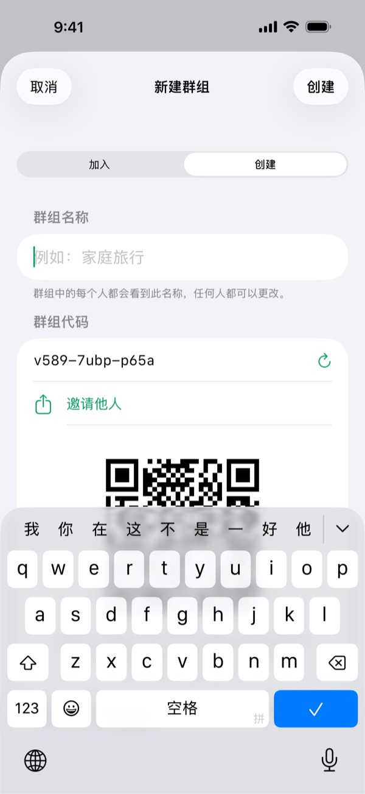
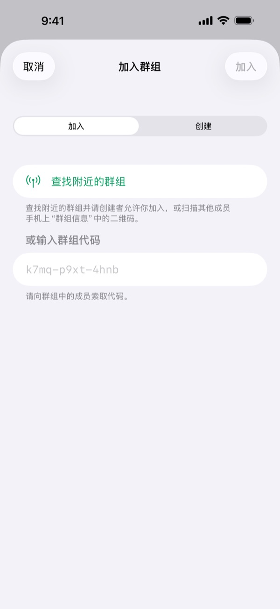
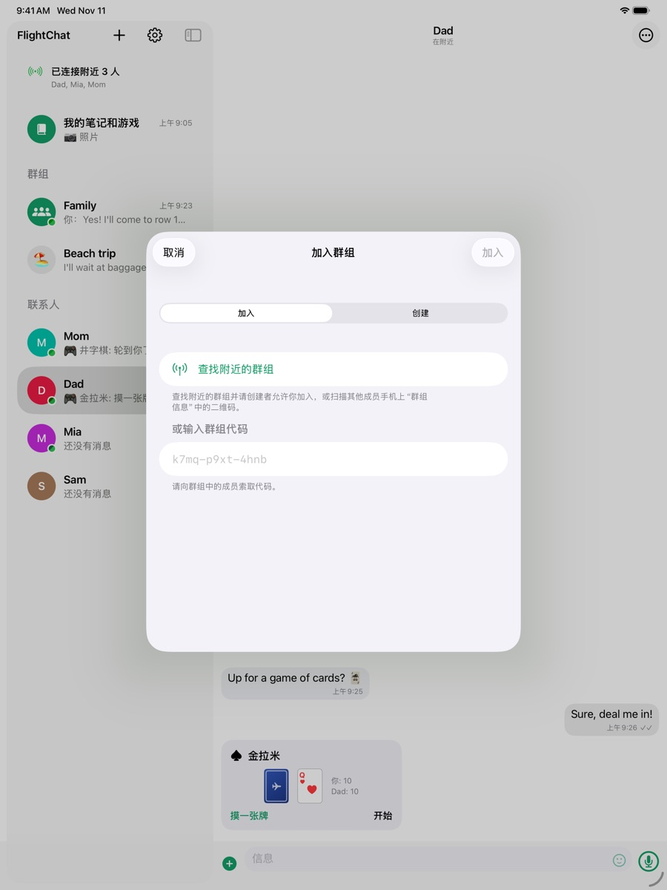
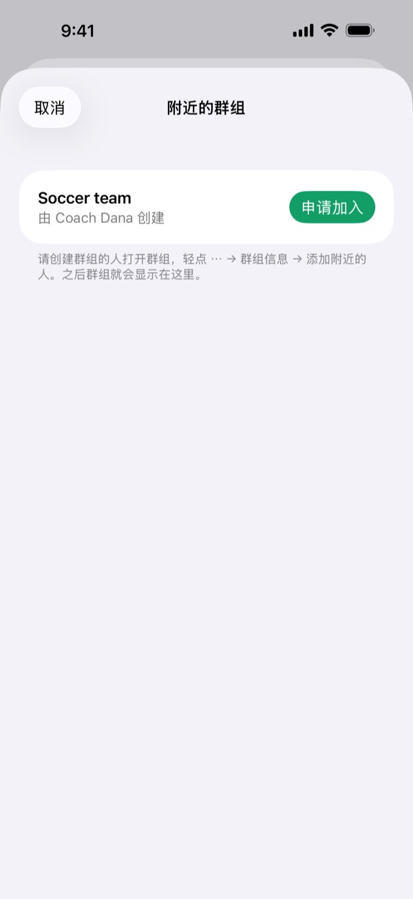
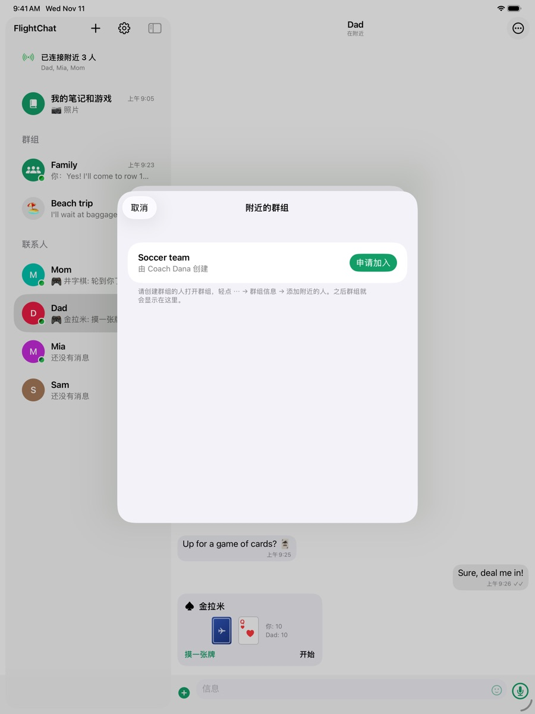
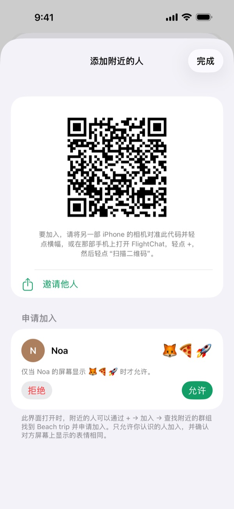
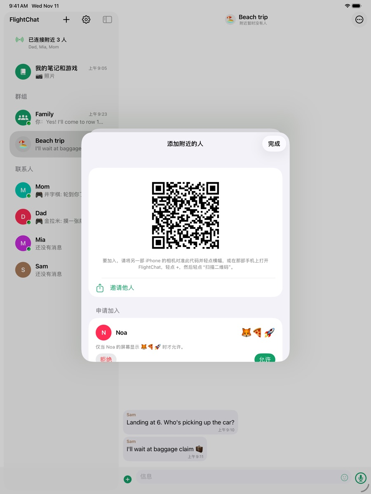
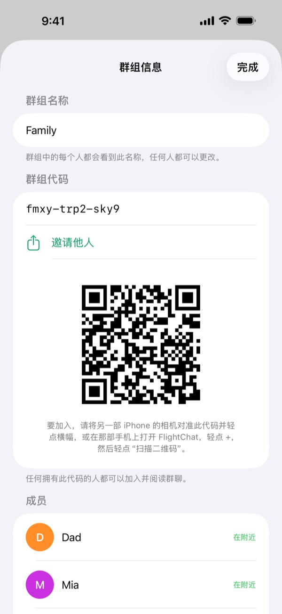
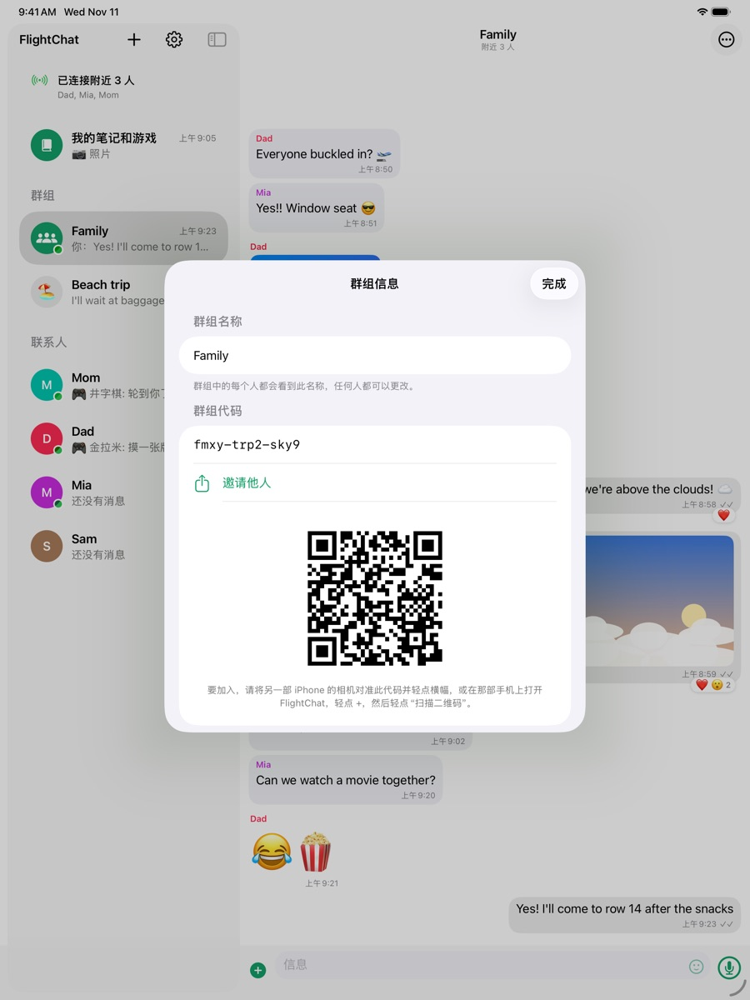
聊天
- 群聊和一对一聊天：每个群组都有自己的聊天。联系人列出与你同在一个群组的所有人；要私聊某人，轻点其姓名即可。两个人同名时会显示所在群组。不再和你同在任何群组的人会移到过往聊天：你仍可查看这些聊天，但新消息要等你们再次同在一个群组时才会发送。向左轻扫可删除聊天。
- 照片、视频、GIF 和文件：轻点消息框旁边的 +。选择拍照或录像使用相机（视频最长 2 分钟），或选择已有的内容。轻点笑脸可发送贴纸和 GIF。视频在发送前会被压缩，传送快得多；原视频仍保留在“照片”中。
- 贴纸：轻点消息栏里的笑脸。共有四组：旅行、家人、心情和度假；轻点底部的图标即可跳到对应的一组。贴纸免费，没有网络也能用。
- 回应：按住一条消息，然后选择表情符号。也可以在那里拷贝文字。
- 回复：向右轻扫一条消息，或按住它然后轻点回复。你回复的消息会显示在你的消息上方，轻点它即可跳回原消息。仍在使用旧版 FlightChat 的人收到的回复不会带上原消息。
- 语音消息：消息栏为空时，按住旁边的麦克风按钮说话，松开即可发送。如果不想发送，在松开之前把手指向左滑动。轻点语音消息即可播放。语音消息最长 2 分钟。仍在使用旧版 FlightChat 的人会收到一个音频文件。
- 一起涂鸦：轻点 +，然后轻点涂鸦。聊天里的每个人都在同一页上画，可用十种颜色、三种粗细的笔和荧光笔，还有直线、矩形、椭圆、表情印章和橡皮擦，每画完一笔大家都能看到。撤销可收回你自己的上一笔，废纸篓按钮可清除你画的全部内容。之后轻点涂鸦卡片可以再次打开，即使中途离开了范围也没关系。画好后轻点完成：这幅画会以图片形式发到聊天中（使用旧版 FlightChat 的人只会收到图片）。轻点 ⋯ 可以存储。发起涂鸦的人在完成前可以从这里删除它，也可以按住涂鸦卡片删除；删除后所有人都看不到。在“我的笔记和游戏”中则是你一个人画，轻点“完成”只会结束这幅涂鸦。
- 我的笔记和游戏：聊天列表中、你的群组上方，有一本只有你能看到的日记。写下笔记，添加照片、贴纸或语音消息；它们只保存在这台设备上，永远不会发送。每天的笔记都在当天的日期下面。按住一条笔记即可编辑或删除。它一直都在，即使你还没有加入任何群组。在这里玩的游戏（比如纸牌接龙）进行中时会显示在顶部；轻点即可继续，轻点 ✕ 可结束。在游戏中，⋯ → 记录会显示你的胜局、最佳用时和最近的游戏，也可以重置。
- 聊天主题（Pro）：在聊天中轻点 ⋯，然后轻点聊天主题，选择经典、海洋、日落、森林、夜空或糖果。每个聊天都有自己的主题，只保存在这台设备上：每个人看到的都是自己选的主题。
- 全屏：轻点照片或视频。横过手机可以看得更大。使用共享按钮可以存储。
- 勾号：✓ 表示消息已保存并发送给已连接的人。✓✓ 表示所有收件人都已收到。
- 不在附近？发给未连接的人的消息会在重新连接后发送。
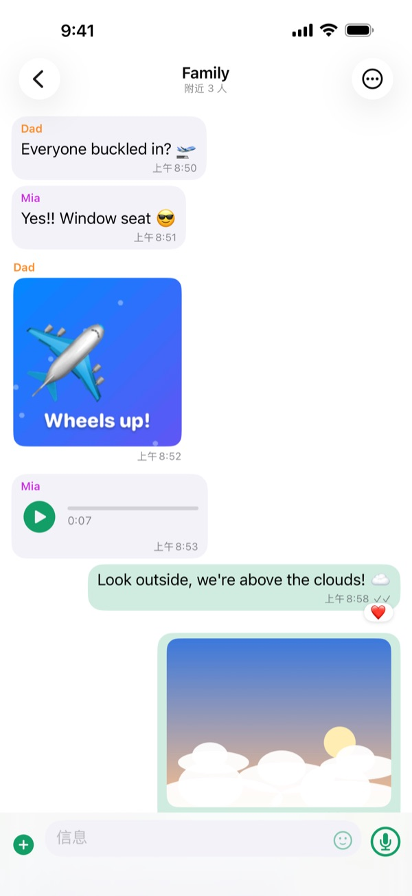
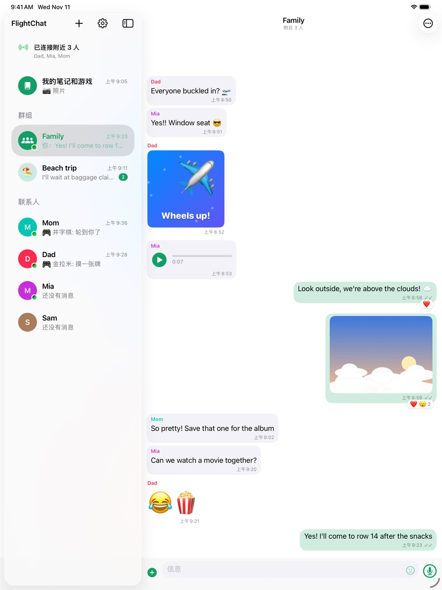
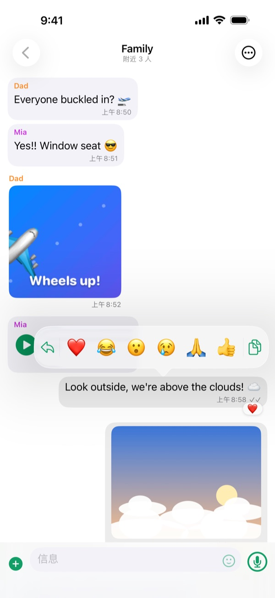
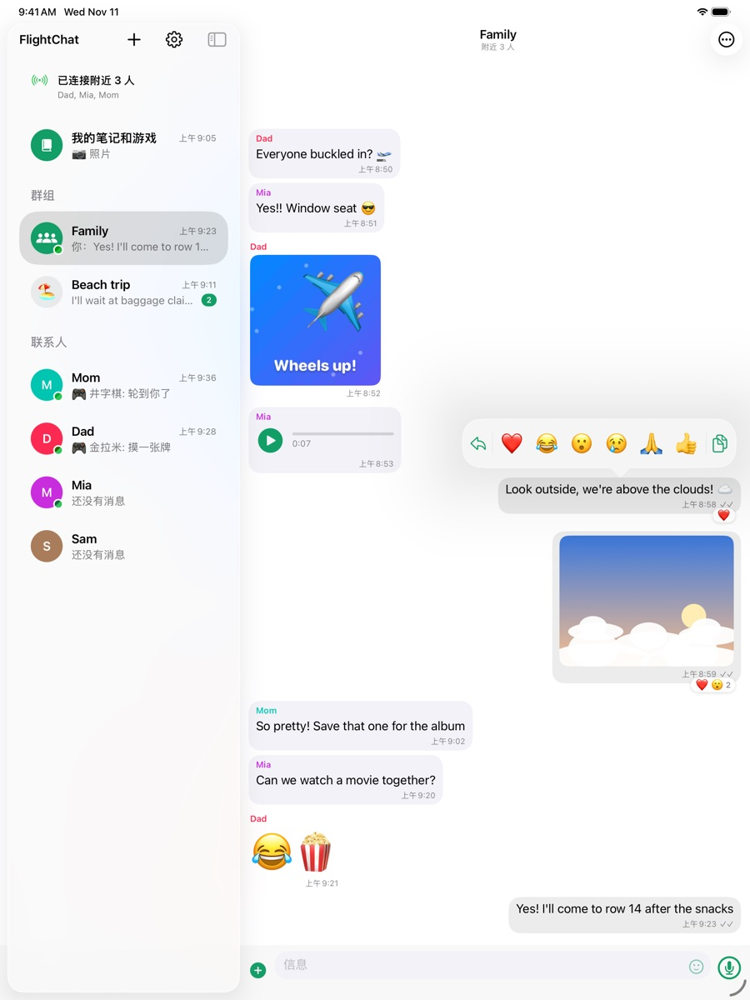
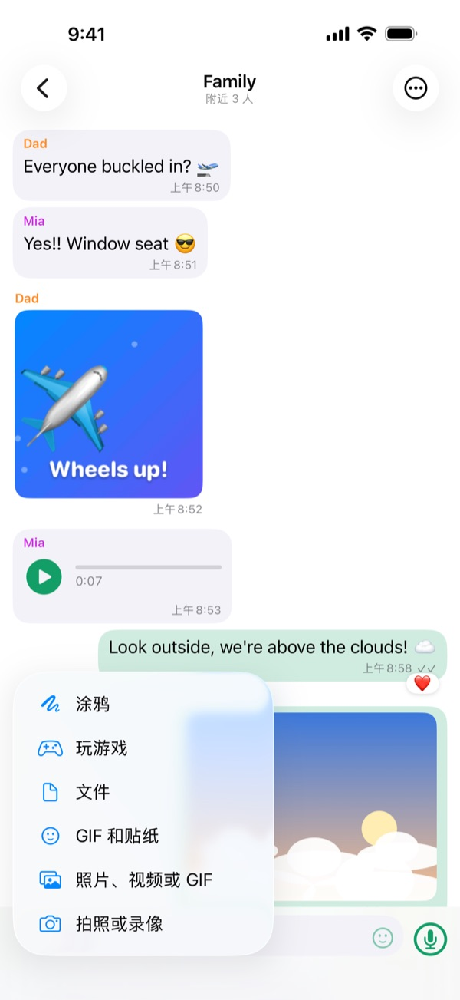
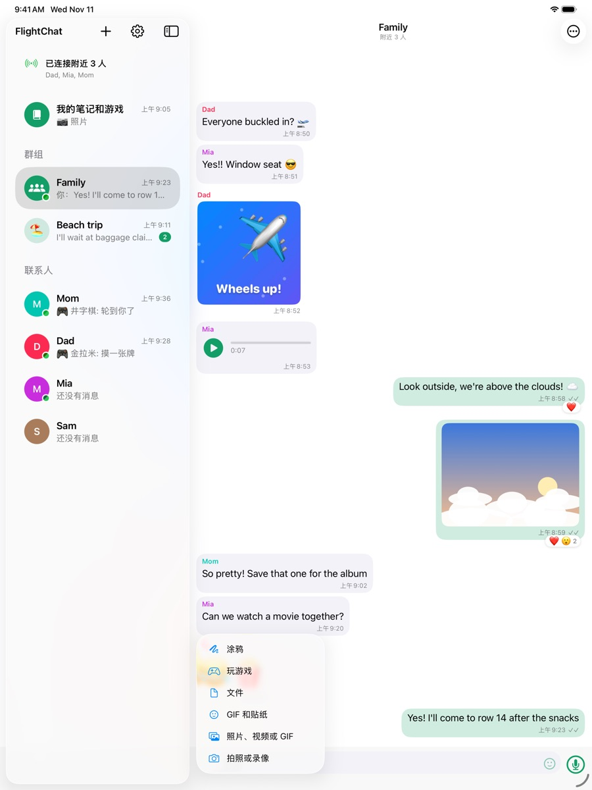
游戏
在一对一聊天中和对方玩个小游戏：轻点 +，然后轻点玩游戏，选择一个游戏。聊天中会为你们双方显示游戏卡片，轻点即可开始。游戏结束后，轻点再来一局，由对方先手。如果聊天中已有该游戏正在进行，再次选择会打开那局游戏。
- 井字棋：轮流放置 ✕ 和 ◯，连成三个即获胜。
- 四子棋：轮流把棋子投入某一列，横、竖或斜向连成四个即获胜。
- 石头剪刀布：双方同时出拳。在双方都出拳之前，任何一方的手机都看不到对方的选择。
- 国际跳棋：斜走，跳过对方棋子即可吃子。王棋可以沿斜线走任意距离。
- 双陆棋：把你的 15 枚棋子走回本区并移出棋盘。骰子会自动为你掷出。
- 扫雷（Pro）：“我的笔记和游戏”中的单人游戏。翻开所有不是雷的格子；每个数字表示周围有几颗雷。可选简单、中等或困难。第一下永远是安全的，你的胜局和最佳用时都保存在这台设备上。
游戏只会发送给对方。如果其中一人离开连接范围，游戏会暂停，手机重新连接后继续。
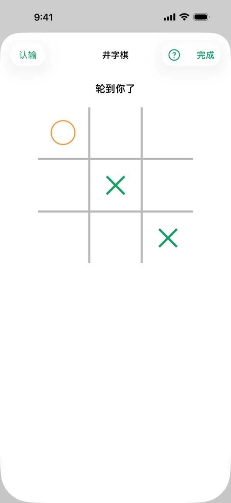
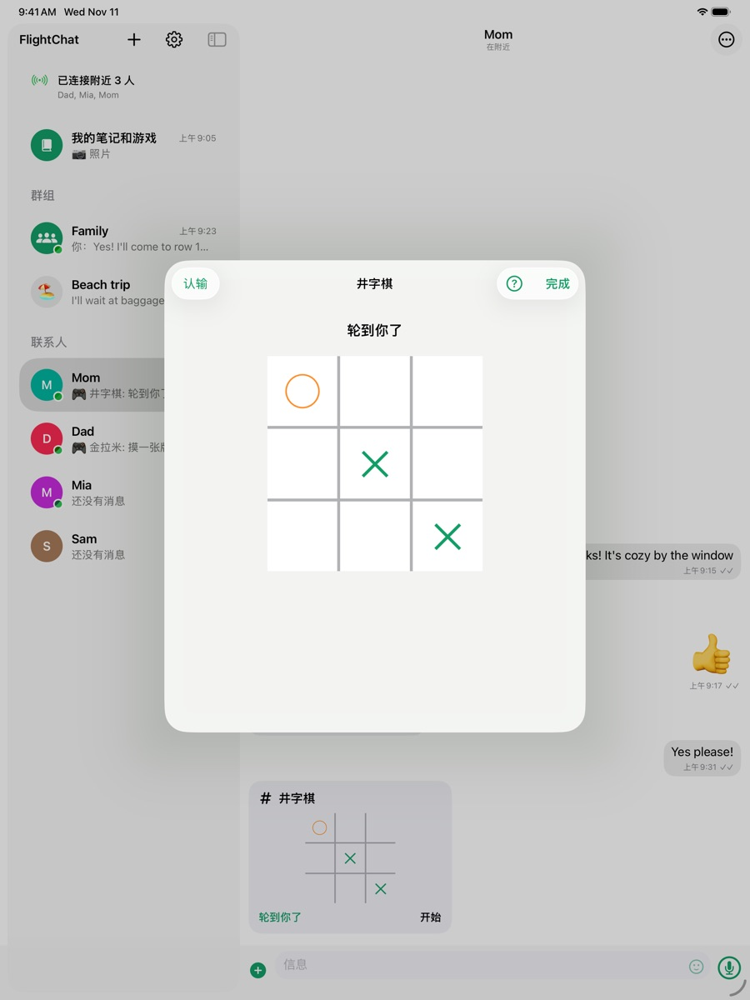
纸牌游戏
纸牌游戏的开始方式相同：轻点 +，然后轻点玩游戏。游戏开始时会洗牌，每个人只能看到屏幕底部自己的手牌。轻点牌堆摸牌，轻点一张牌出牌；当前可以出的牌会微微抬起。
- 比大小：双方各翻开最上面的一张牌，大的一方赢得两张牌（A 最大）。如果平局，下一轮的赢家把这些牌也一起赢走。26 轮后，赢得牌多的一方获胜。
- 疯狂八：每人七张牌。出一张与牌堆顶部花色或点数相同的牌，或者摸牌。8 可以出在任何牌上，并由你指定下一种花色。先出完手牌的一方获胜。
- 金拉米：每人十张牌。轮到你时，从牌堆或弃牌堆摸一张牌，然后弃一张牌。组成牌组：三或四张点数相同的牌，或同花色的三张及以上顺子。剩余散牌不超过 10 点时可以敲牌结束这一局；没有散牌就是“金”。
- 纸牌接龙：一个人玩的游戏，不需要附近有人。在我的笔记和游戏中，轻点 +，然后轻点玩游戏和纸牌接龙，选择简单（每次翻一张牌）或困难（三张）。你的胜局和最佳用时只保存在这台设备上。
- 空当接龙（Pro）：“我的笔记和游戏”中的另一款单人游戏。所有牌都正面朝上发出，所以几乎每局只要多想想都能赢。轻点一张牌即可把它移到合适的位置；可以放心收上去的牌会自己移到基础堆。你的胜局和最佳用时都保存在这台设备上。
- 红心大战（群聊，3 或 4 人）：先传出三张牌，然后尽量别在你赢的墩里收到红心或黑桃 Q。有人达到 100 分时，分数最低者获胜。
- 3 至 4 人群组游戏：在群组聊天中轻点 +，然后轻点玩游戏，选择疯狂八或金拉米。选择 2 或 3 位玩伴（附近的人已自动勾选），然后轻点发牌。大家按顺序轮流出牌。疯狂八每人 5 张牌；金拉米三人时每人 10 张、四人时每人 7 张，有人敲牌时其他人都会补牌并计分。群组里的每个人都能看到这局游戏，但只有玩家会拿到牌，而且谁都看不到别人的手牌。
你的手牌只显示在你的手机上；对方只能看到你有几张牌，看不到是哪些牌。金拉米结束时会亮出双方手牌，方便核对得分。
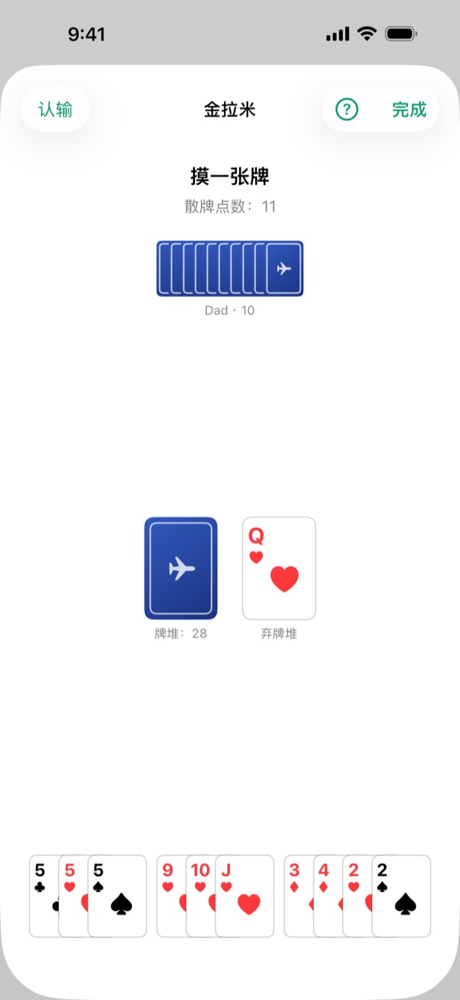
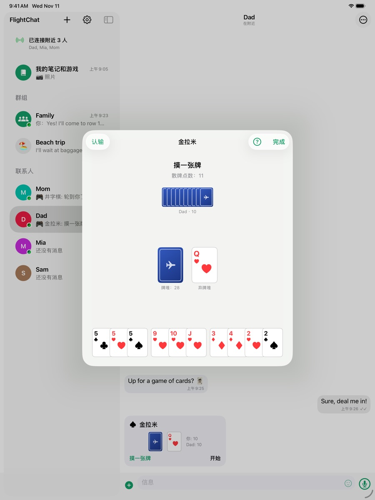
FlightChat Pro
FlightChat 免费使用，包括聊天、照片、贴纸和大多数游戏。FlightChat Pro 是一次性购买项目，可以开始红心大战、双陆棋、疯狂八和金拉米，还能独自玩空当接龙和扫雷。在拥有 Pro 之前，这些游戏在游戏列表中会显示 Pro。它还会解锁聊天主题。
只有开始 Pro 游戏的人需要 Pro。没有 Pro 的朋友也能加入你开始的游戏，一对一或在群组中都可以。
在设置 → FlightChat Pro 中购买，或轻点一个 Pro 游戏。只需付款一次，无需订阅，并可通过家人共享与家人共用。购买需要联网，所以请在登机前购买；购买后，Pro 可离线使用。在新 iPhone 上，轻点恢复购买。
游戏规则
FlightChat 中每个游戏的规则。在游戏中轻点玩法即可直接跳到该游戏的规则。
井字棋
- 两名玩家在 3 × 3 的格子上轮流下子。先手为 ✕，后手为 ◯。
- 轮到你时，轻点一个空格放下你的标记。
- 横、竖或斜向连成三个即获胜。如果格子先被填满，则为平局。
四子棋
- 两名玩家轮流把棋子投入 7 列 6 行的棋盘。先手为红色，后手为黄色。
- 轮到你时，轻点一列：棋子会落到该列最低的空位。已满的列不能再放棋子。
- 横、竖或斜向连成四个即获胜。如果棋盘先被填满，则为平局。
石头剪刀布
- 双方同时选择石头、剪刀或布。
- 石头赢剪刀，剪刀赢布，布赢石头。双方出一样的则为平局。
- 在对方也出拳之前，你的选择会保持密封，所以谁都无法先看到对方的选择。
国际跳棋
- 每位玩家在 8 × 8 棋盘的深色格上有 12 枚棋子，自己的棋子在下方。先手使用浅色棋子。
- 棋子每次沿斜线向前走一格。吃子时，跳过相邻的对方棋子，落到其后方的空格上，向前向后都可以。
- 能吃子时必须吃子。如果同一枚棋子落下后还能继续吃，就在同一回合内继续：依次轻点每个落点。
- 走到对方底线的棋子升为王棋（♛）。王棋可沿斜线走任意距离，也可吃掉任意距离外的棋子，并落在其后方任意空格上。
- 对方没有棋子或无棋可走时，你就获胜。如果双方各走 30 步都只有王棋移动且没有吃子，则为平局。
双陆棋
- 每位玩家有 15 枚棋子，沿棋盘走向位于右下方的本区，然后移出棋盘。最先移出全部 15 枚的一方获胜。
- 每回合会为你掷两颗骰子。每颗骰子移动一枚棋子，或用两颗骰子移动同一枚棋子。掷出对子时走四次。能用两颗骰子就必须都用；如果只能用一颗，在可行时必须用点数较大的那颗。
- 不能落在有两枚或更多对方棋子的点上。落在只有一枚对方棋子的点上就会把它打下：它被放到中间的横栏上，必须先重新进场，对方才能移动其他棋子。
- 所有棋子都进入本区后，就可以移出棋盘：用正好的点数，或从最高的点用更大的点数。
- 每颗骰子操作一次：先轻点一枚棋子，再轻点目的地。撤销退回一步，结束回合结束你的回合。无法移动时，轻点过。
- 在对方移出任何棋子之前获胜称为全胜（gammon）；如果对方仍有棋子在横栏上或在你的本区内，称为大全胜（backgammon）。不使用加倍骰。
比大小
- 洗牌后分成两半：每人 26 张，背面朝上。
- 每一轮，双方各翻开最上面的一张牌，大的一方赢得两张牌。A 最大，然后是 K、Q、J，再从 10 到 2。
- 如果两张牌点数相同，它们留在中间，下一轮的赢家把这些牌也一起赢走。
- 26 轮之后，赢得牌多的一方获胜。
疯狂八
- 两人游戏时每人 7 张牌；三或四人（在群组聊天中）每人 5 张。翻开一张牌作为牌堆的第一张，其余的牌作为摸牌堆。
- 轮到你时，出一张与牌堆顶部花色或点数相同的牌，或者从摸牌堆摸一张牌。出牌前可以想摸几张就摸几张。
- 8 是万能牌：可以出在任何牌上，然后指定下一位玩家必须跟的花色。
- 如果无牌可出且摸牌堆已空，轻点过。
- 最先出完手牌的玩家获胜。如果谁都无法再出牌，手中点数最低者获胜：8 算 50 点，人头牌 10 点，A 1 点，其余按点数计算。
金拉米
- 每人 10 张牌（在群组聊天中四人游戏时每人 7 张）。翻开一张牌作为弃牌堆的第一张，其余的牌作为摸牌堆。
- 轮到你时，从摸牌堆或弃牌堆顶部拿一张牌，然后弃一张牌。不能把刚从弃牌堆拿来的牌直接弃回去。
- 组成牌组：三或四张点数相同的牌（7♣ 7♥ 7♠），或同花色的三张及以上顺子（4♥ 5♥ 6♥）。A 最小。FlightChat 会自动帮你整理牌组。
- 不在牌组中的牌是散牌：A 算 1 点，数字牌按点数，人头牌 10 点。你的总数显示为散牌点数。
- 弃牌后散牌点数不超过 10 时，可以敲牌结束这一局；没有散牌就是“金”。然后其他玩家可以把能接上的牌补到敲牌者的牌组中（“金”之后不能补牌）。
- 计分：敲牌者赢得与每位其他玩家的散牌点数差。“金”赢得所有人的散牌点数再加 25。散牌点数不高于敲牌者的玩家反超，赢得差值再加 25。如果摸牌堆只剩 2 张，这一局为平局。
红心大战
- 群聊中 3 或 4 人玩。四人时每人 13 张；三人时去掉方块 2，每人 17 张。每一局都重新洗牌。
- 每局开始前，每人传出三张牌：先传给左边，再传给右边，然后传给对面（三人时不传对面），接着一局不传，然后循环。大家轮流选牌。
- 持有梅花 2 的人用它出第一墩。能跟花色就必须跟；跟不了可以出任何牌，但第一墩不能出红心或黑桃 Q，除非手里只剩这些。首出花色中最大的牌赢得这一墩，并先出下一墩。
- 在之前的墩里出现红心之前，不能首出红心，除非你手里只剩红心。
- 每收到一张红心记 1 分，黑桃 Q 记 13 分。一局里收齐全部 26 分就是“全收”：你得 0 分，其他人各得 26 分。
- 有人达到 100 分时，分数最低者获胜。如果最低分有并列，就再打一局。轮到你时可以轻点退出游戏：游戏会为所有人结束，其他人中分数最低者获胜。
纸牌接龙
- 发七叠牌：第一叠一张，下一叠两张，依此类推直到七张，每叠只有最上面一张正面朝上。其余的牌是牌堆。
- 目标是把所有牌移到上方的四个位置，每种花色一个，从 A 到 K 依次排好。
- 在七叠牌上，一张牌可以放在点数大一、颜色不同的牌上：红 6 放在黑 7 上。你可以连同上面的牌一起移动。只有 K 可以放到空位上。移走一叠里最后一张正面的牌后，下面的牌会翻开。
- 轻点牌堆翻牌：简单模式每次一张，困难模式每次三张，只能打出最上面那张。牌堆用完后，轻点它把牌放回去再翻一遍。
- 轻点一张牌即可把它移到能放的位置，优先放到上方同花色的位置。撤销可以退回一步。所有牌都翻开后，完成会替你走完剩下的步骤。
空当接龙
- 52 张牌全部正面朝上发成八列。上方有四个空当和四个基础堆，每种花色一个。
- 每个基础堆按花色从 A 收到 K。52 张牌全部收上基础堆就赢了。
- 在列中，把牌放在大一点且颜色不同的牌上（红 8 放在黑 9 上）。空列可以放任何牌，每个空当只能放一张牌。
- 每列只能移动最上面的牌，但有空位时，一串顺序牌（依次小一、颜色交替）可以一起移动：每个空的空当多移一张，每个空列翻倍。
- 轻点一张牌来移动它：能收上基础堆就收上去，否则放到某一列，再不行放到空列，最后放到空当。不会再被用到的牌会自己收上去。“撤销”收回一步，“完成”会自动打完已经赢定的牌局。⋯ 菜单中的结束游戏会停止当前牌局而不开新局；这局算作放弃。
扫雷
- 雷藏在格子下面：简单为 9 × 9、10 颗雷，中等为 10 × 14、25 颗雷，困难为 12 × 20、50 颗雷。每局都是新的棋盘。
- 轻点格子将其翻开。第一下永远不会是雷，而且总会翻开一片区域。数字表示周围八个格子中有几颗雷；空格子会自动翻开周围的格子。
- 按住格子可以在找到的雷上插旗（或把棋盘下方的按钮切到“插旗”）。轻点一个周围雷都已插旗的数字，可以翻开它周围其余的格子。
- 翻开所有不是雷的格子就赢了；翻到雷游戏就结束。计时从第一下开始。⋯ 菜单中的“结束游戏”会停止这局，算作放弃。
导出聊天
打开聊天，轻点 ⋯，然后轻点导出聊天。FlightChat 会生成一个 ZIP 文件，包含文字形式的对话以及你手机上的照片、视频和文件。可以存储到“文件”、通过隔空投送发送，或在恢复联网后用电子邮件发送。游戏会显示为一行，说明结果如何；涂鸦则显示为图片。
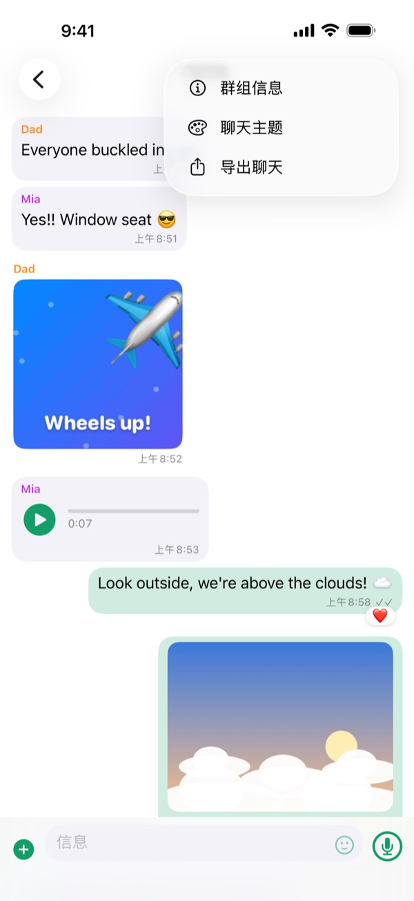
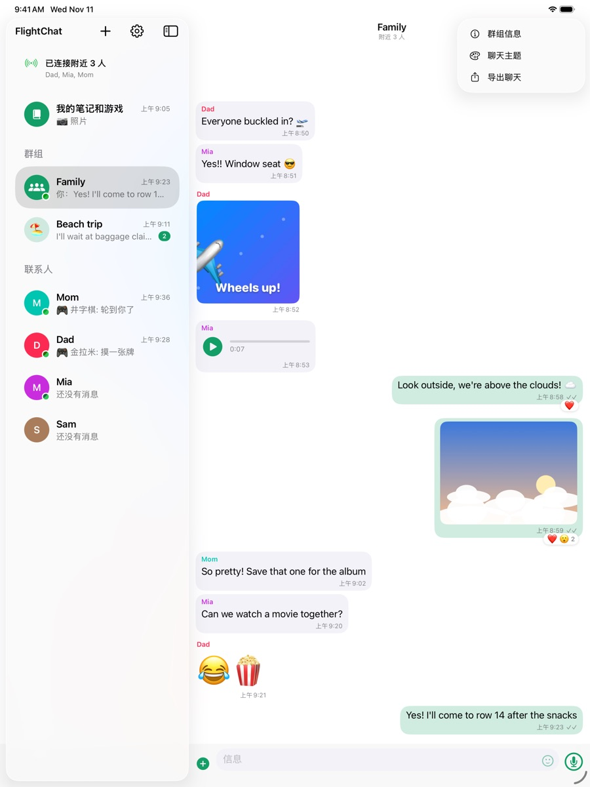
屏蔽和举报
- 在一对一聊天中：轻点 ⋯，然后轻点屏蔽或举报。
- 在群聊中：按住对方的消息，然后轻点手形图标。
- 你将不再看到对方的消息，对方也无法给你发消息。对方不会收到通知。
- 举报并屏蔽还会通过电子邮件向我们发送举报。我们会在 24 小时内回复。
- 在设置 → 已屏蔽的人中取消屏蔽。
被你屏蔽的人如果有群组代码，仍可查看群聊。要彻底移除对方，请创建一个新群组，让其他人都加入，然后退出旧群组。
如果你在机上感到不安全，请立即告知机组人员。
如果手机无法连接
- 检查控制中心里的无线局域网和蓝牙是否都已打开。飞行模式会关闭它们。
- 在两部手机上都保持 FlightChat 处于打开状态。
- 确认你们在同一个群组：打开群聊，轻点 ⋯，然后轻点群组信息，比较代码。
- 在 iPhone 的“设置”App 中打开 FlightChat，确保已打开本地网络。
- 靠近一些。相隔几排的手机通常能连接；大型飞机的两端可能连不上。
- 刚加入群组？群组里的手机会在几秒钟内找到你。
- 最多可以有 8 部手机同时相互连接（包括你的手机）。
语言
FlightChat 使用 iPhone 的语言：英语、法语、西班牙语、中文、日语、希伯来语、韩语或阿拉伯语。希伯来语和阿拉伯语从右往左阅读。消息、名字和贴纸始终按发送时的原样显示。要只为 FlightChat 选择语言，请轻点聊天列表上的齿轮图标，选择语言，轻点存储，然后关闭并重新打开 FlightChat。也可以在 iPhone 的“设置”App 中的 App → FlightChat → 语言里选择。
你的数据
你的消息只保存在你的手机和群组成员的手机上。没有账户，也没有服务器。要删除所有内容，请打开设置并轻点清除聊天记录。详情请阅读隐私政策和使用条款（英文）。
联系我们
遇到问题或有疑问？请发送电子邮件至 biomass-65-jumbo@icloud.com。